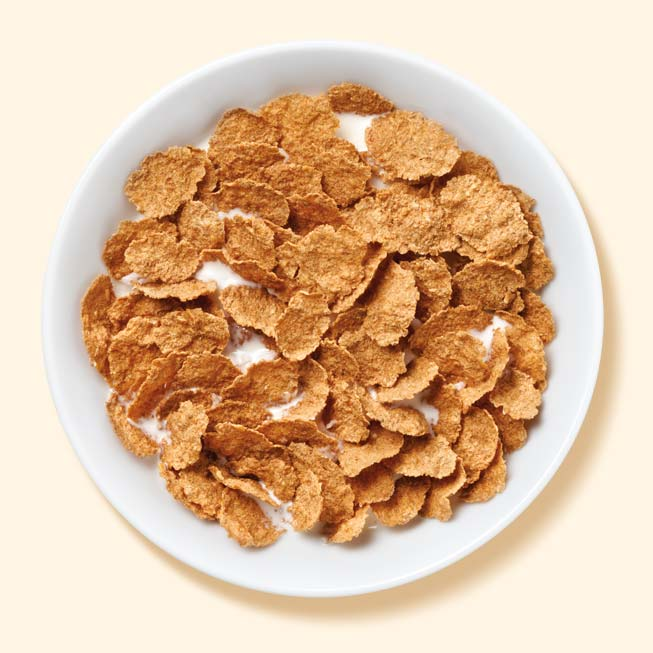

cereal

description
cereal is a classic breakfast. crunchy, sweet, and full of vitamins and protein,
it has defied the odds of time and stayed consistent as a staple breakfast.
ingredients
- cereal of your choice (example, Special K
- milk of your choice
steps
- pour cereal into a bowl
- pour some milk into the cereal
return to top
go back to homepage